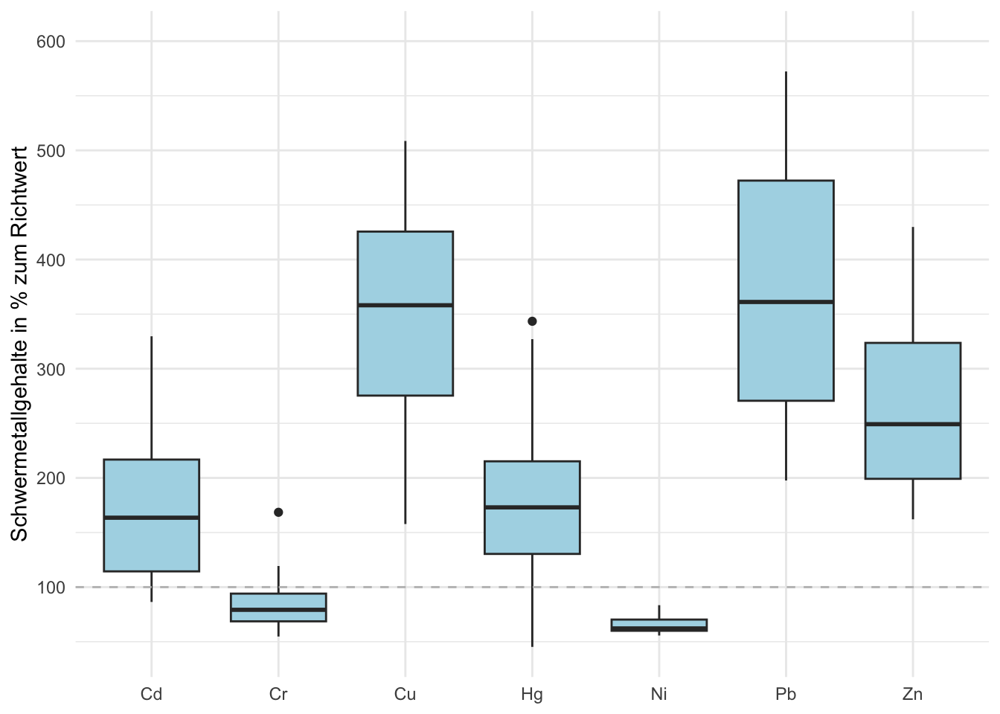
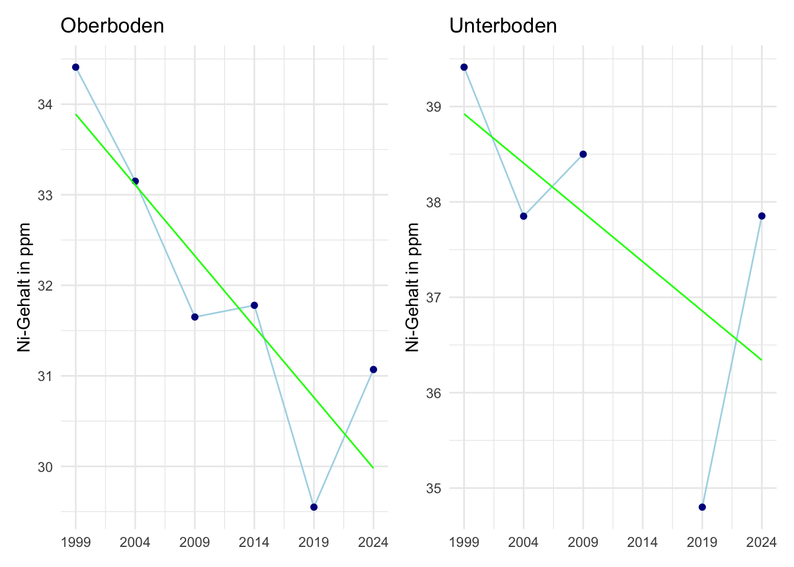
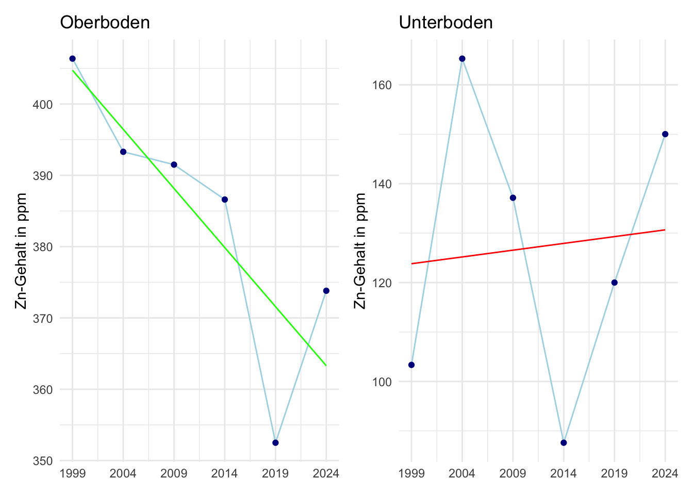

library(tidyverse)
library(patchwork)
library(knitr)
library(dplyr)
library(kableExtra)Abschlussprojekt rstatsZH
familiengaerten_lang_raw <- read_csv2(here::here("daten/raw/fg_20250331_v2.csv"))Einleitung
Die Kantonale Bodenüberwachung (oder kurz: KaBo) ist ein langfristiges Monitoringprogramm der Fachstelle Bodenschutz. An über 500 Standorten im Kanton Zürich werden Böden regelmässig beprobt und untersucht. Analysiert werden chemische und physikalische Eigenschaften des Bodens.
Das vorliegende Projekt befasst sich mit einem Familiengartenareal im Kanton Zürich, in dem zu sechs Zeitpunkten (1999, 2004, 2009, 2014, 2019 und 2024) an 16 Standorten Bodenproben entnommen wurden. Der Fokus der Arbeit liegt auf einer groben Beschreibung der Belastungssituation im Familiengartenareal und weniger auf der Beurteilung der Schwermetallgehalte gemäss der „Verordnung über Belastungen des Bodens“ (VBBo) und dem „Handbuch – Gefährdungsabschätzung und Massnahmen bei schadstoffbelasteten Böden“.
Analyseziele
- Darstellung der Verteilungen der Schwermetallgehalte (Boxplot).
- Darstellung der zeitlichen Verläufe sowie der zeitlichen Trends (lineare Regression) der verschiedenen Schwermetallgehalte.
- Analyse der Resultate hinsichtlich ihrer räumlichen Verteilung (heterogene/ homogene Verteilung).
Daten
Die Daten beinhalten Schwermetallgehalte [ppm] sowie die Begleitparameter pH und organischer Kohlenstoff [%] von Bodenproben eines Familiengartenareals. Auf dem Areal wurden zu sechs Zeitpunkten (1999, 2004, 2009, 2014, 2019 und 2024) an 16 Standorten Bodenproben aus den Tiefen 0–20 cm und 40–60 cm entnommen und auf die oben genannten Parameter analysiert.
codebook <- read_csv2(here::here("daten/processed/codebook.csv"))Daten Aufbereitung
#Nicht-relevante Spalten löschen für vereinfachte Transformation in breite Tabelle
#Spalte mit Jahr hinzufügen (Grundlage Datum)
familiengaerten_lang <- familiengaerten_lang_raw |>
select(-c(y,
m.LaborID,
m.a.jahr,
HorizontNr,
m.ProbenIDs,
mad.y,
mad.y.orig,
N.used)) |>
mutate(Jahr = year(ymd(p.dat))) |>
rename(Periode = periode,
Probenahmedatum = p.dat,
Parameter = para,
Wert = y.orig) |>
relocate(c(Probenart, Parameter, Wert),
.after = last_col())
familiengaerten_lang$Wert <- as.numeric(familiengaerten_lang$Wert)
glimpse(familiengaerten_lang)Rows: 1,949
Columns: 7
$ StandortID <dbl> 828, 828, 828, 828, 828, 828, 828, 828, 828, 828, 828,…
$ Periode <dbl> 1, 1, 1, 1, 1, 1, 1, 1, 1, 1, 1, 1, 1, 1, 1, 1, 1, 1, …
$ Probenahmedatum <date> 1999-12-16, 1999-12-16, 1999-12-16, 1999-12-16, 1999-…
$ Jahr <dbl> 1999, 1999, 1999, 1999, 1999, 1999, 1999, 1999, 1999, …
$ Probenart <chr> "OBER-0-20", "UNTER40-60", "OBER-0-20", "UNTER40-60", …
$ Parameter <chr> "CDT_PPM", "CDT_PPM", "CRT_PPM", "CRT_PPM", "CUT_PPM",…
$ Wert <dbl> 0.734800, 0.281370, 33.694030, 35.438610, 74.900000, 2…#Lange Tabelle in breite Tabelle transformieren
#Spaltenbeschriftungen unbenennen
#Spalten Anordnung ändern
familiengaerten_breit <- pivot_wider(
data = familiengaerten_lang,
names_from = "Parameter",
values_from = "Wert") |>
relocate(c(PHCA, ORG_SUB),
.after = last_col())#Zeilen mit StandortID 9401-9416 in breiter und langer Tabelle löschen, da diese Standorte lediglich in der letzten Messperiode beprobt wurden.
familiengaerten_zeitreihe_breit <- familiengaerten_breit |>
filter(!(StandortID >= 9401))
familiengaerten_zeitreihe_lang <- familiengaerten_lang |>
filter(!(StandortID >= 9401))#Prozessierte/aufbereitete Daten speichern
write_csv(x = familiengaerten_zeitreihe_breit,
here::here("daten/processed/familiengaerten_zeitreihe_breit.csv"))
write_csv(x = familiengaerten_zeitreihe_lang,
here::here("daten/processed/familiengaerten_zeitreihe_lang.csv"))Ergebnisse
Boxplots
In Figure 1 werden die Schwermetallgehalte der letzten Untersuchungsperiode (2024) in einem Boxplot dargestellt. Damit alle Schwermetalle in einem gemeinsamen Boxplot dargestellt werden können, werden die Gehalte als Prozentsatz des jeweiligen Richtwerts angegeben.
Folgend sind die Richtwerte gemäss VBBo wiedergegeben:
Cr: 50 ppm, Ni: 50 ppm, Cu: 40 ppm, Zn: 150 ppm, Cd: 0.8 ppm, Hg: 0.5 ppm und Pb: 50 ppm
familiengarten_2024_ob_sm_lang <- familiengaerten_zeitreihe_lang |>
filter(Jahr == 2024,
Probenart == "OBER-0-20",
!Parameter %in% c("ORG_SUB", "PHCA", "Hg_AMA_PPM")) |>
mutate(Proz_zum_Richtwert = case_when(
Parameter == "CDT_PPM" ~ Wert*100/0.8,
Parameter == "CRT_PPM" ~ Wert*100/50,
Parameter == "CUT_PPM" ~ Wert*100/40,
Parameter == "HGT_PPM" ~ Wert*100/0.5,
Parameter == "NIT_PPM" ~ Wert*100/50,
Parameter == "PBT_PPM" ~ Wert*100/50,
Parameter == "ZNT_PPM" ~ Wert*100/150,
TRUE ~ NA_real_)) |>
mutate(Parameter =case_when(
Parameter == "CDT_PPM" ~ "Cd",
Parameter == "CRT_PPM" ~ "Cr",
Parameter == "CUT_PPM" ~ "Cu",
Parameter == "HGT_PPM" ~ "Hg",
Parameter == "NIT_PPM" ~ "Ni",
Parameter == "PBT_PPM" ~ "Pb",
Parameter == "ZNT_PPM" ~ "Zn"
))
ggplot(data = familiengarten_2024_ob_sm_lang,
mapping = aes (x = Parameter,
y = Proz_zum_Richtwert)) +
geom_boxplot(fill = "lightblue")+
theme_minimal() +
coord_cartesian(ylim = c(NA, 600))+ #die y-Achse auf 600 % begrenzen, Ausreisser (bei Blei 1530 %)in die Berechnung miteinbeziehen aber nicht angezeigen
scale_y_continuous(breaks = seq(0, 600, by = 100))+ #Achsenbeschriftung in 100%-Schritten
ylab("Schwermetallgehalte in % zum Richtwert") +
theme(axis.title.x = element_blank())+
geom_hline(yintercept = 100, color = "grey", linewidth = 0.5, linetype = "dashed")

Auf dem Familiengartenareal liegen erhöhte Schwermetallgehalte durch Cadmium, Kupfer, Quecksilber, Blei und Zink vor (Figure 1). Insbesondere werden die Richtwerte für Blei und Kupfer deutlich überschritten (Mediane > 350 %). Auffällig ist zudem, dass der Boxplot für Blei einen hohen Interquartilsabstand sowie einen Ausreißer von über 1500 % des Richtwerts aufweist.
Liniendiagramme
#Datenaufbereitung für Liniendiagramm
# Oberboden
familiengaerten_zeitreihe_ob_breit <- familiengaerten_zeitreihe_breit |>
filter(Probenart == "OBER-0-20")
familiengaerten_zeitreihe_mediane_ob <- familiengaerten_zeitreihe_ob_breit |>
group_by(Jahr) |>
summarise(across(c(CRT_PPM, NIT_PPM, CUT_PPM, ZNT_PPM, CDT_PPM, HGT_PPM, PBT_PPM), ~median(.x, na.rm = TRUE), .names = "Median_{.col}"))
# Unterboden
familiengaerten_zeitreihe_ub_breit <- familiengaerten_zeitreihe_breit |>
filter(Probenart == "UNTER40-60")
familiengaerten_zeitreihe_mediane_ub <- familiengaerten_zeitreihe_ub_breit |>
group_by(Jahr) |>
summarise(across(c(CRT_PPM, NIT_PPM, CUT_PPM, ZNT_PPM, CDT_PPM, HGT_PPM, PBT_PPM), ~median(.x, na.rm = TRUE), .names = "Median_{.col}"))In Figure 2 bis Figure 8 werden für die einzelnen Schwermetalle die Mediane aller Standorte pro Jahr in einem Linien- und Punktdiagramm dargestellt. Die Diagramme für den Ober- und Unterboden werden nebeneinander abgebildet. Um einen möglichen Trend sowie eine potenzielle Verlagerung vom Ober- in den Unterboden erkennen zu können, wurde zudem eine lineare Regression eingefügt.
# Liniendiagramme für Cr
cr_ob <- ggplot(data = familiengaerten_zeitreihe_mediane_ob,
aes(x = Jahr, y = Median_CRT_PPM))+
geom_line(color = "lightblue") +
geom_point(color = "darkblue") +
theme_minimal() +
geom_smooth(method = "lm", se = FALSE, color = "green", linewidth = 0.5) +
scale_x_continuous(breaks = c(1999, 2004, 2009, 2014, 2019, 2024)) +
ylab("Cr-Gehalt in ppm") +
theme(axis.title.x = element_blank()) +
ggtitle("Oberboden")
cr_ub <- ggplot(data = familiengaerten_zeitreihe_mediane_ub,
aes(x = Jahr, y = Median_CRT_PPM))+
geom_line(color = "lightblue") +
geom_point(color = "darkblue") +
theme_minimal() +
geom_smooth(method = "lm", se = FALSE, color = "green", linewidth = 0.5) +
scale_x_continuous(breaks = c(1999, 2004, 2009, 2014, 2019, 2024)) +
ylab("Cr-Gehalt in ppm") +
theme(axis.title.x = element_blank()) +
ggtitle("Unterboden")
cr_ob + cr_ub# Liniendiagramme für Ni
ni_ob <- ggplot(data = familiengaerten_zeitreihe_mediane_ob,
aes(x = Jahr, y = Median_NIT_PPM))+
geom_line(color = "lightblue") +
geom_point(color = "darkblue") +
theme_minimal() +
geom_smooth(method = "lm", se = FALSE, color = "green", linewidth = 0.5) +
scale_x_continuous(breaks = c(1999, 2004, 2009, 2014, 2019, 2024)) +
ylab("Ni-Gehalt in ppm") +
theme(axis.title.x = element_blank()) +
ggtitle("Oberboden")
ni_ub <- ggplot(data = familiengaerten_zeitreihe_mediane_ub,
aes(x = Jahr, y = Median_NIT_PPM))+
geom_line(color = "lightblue") +
geom_point(color = "darkblue") +
theme_minimal() +
geom_smooth(method = "lm", se = FALSE, color = "green", linewidth = 0.5) +
scale_x_continuous(breaks = c(1999, 2004, 2009, 2014, 2019, 2024)) +
ylab("Ni-Gehalt in ppm") +
theme(axis.title.x = element_blank()) +
ggtitle("Unterboden")
ni_ob + ni_ub

Von 1999 bis 2024 ist, über das gesamte Familiengartenareal betrachtet, sowohl im Ober- als auch im Unterboden eine Abnahme der Chrom- und Nickelgehalte festzustellen (Figure 2 und Figure 3).
# Liniendiagramme für Cu
cu_ob <- ggplot(data = familiengaerten_zeitreihe_mediane_ob,
aes(x = Jahr, y = Median_CUT_PPM))+
geom_line(color = "lightblue") +
geom_point(color = "darkblue") +
theme_minimal() +
geom_smooth(method = "lm", se = FALSE, color = "red", linewidth = 0.5) +
scale_x_continuous(breaks = c(1999, 2004, 2009, 2014, 2019, 2024)) +
ylab("Cu-Gehalt in ppm") +
theme(axis.title.x = element_blank()) +
ggtitle("Oberboden")
cu_ub <- ggplot(data = familiengaerten_zeitreihe_mediane_ub,
aes(x = Jahr, y = Median_CUT_PPM))+
geom_line(color = "lightblue") +
geom_point(color = "darkblue") +
theme_minimal() +
geom_smooth(method = "lm", se = FALSE, color = "red", linewidth = 0.5) +
scale_x_continuous(breaks = c(1999, 2004, 2009, 2014, 2019, 2024)) +
ylab("Cu-Gehalt in ppm") +
theme(axis.title.x = element_blank()) +
ggtitle("Unterboden")
cu_ob + cu_ubDie Mediane der Kupfergehalte im Oberboden weisen einen eindeutigen Anstieg auf. Im Unterboden ist keine eindeutige Tendenz zu erkennen (Figure 4).
# Liniendiagramme für Zn
zn_ob <- ggplot(data = familiengaerten_zeitreihe_mediane_ob,
aes(x = Jahr, y = Median_ZNT_PPM))+
geom_line(color = "lightblue") +
geom_point(color = "darkblue") +
theme_minimal() +
geom_smooth(method = "lm", se = FALSE, color = "green", linewidth = 0.5) +
scale_x_continuous(breaks = c(1999, 2004, 2009, 2014, 2019, 2024)) +
ylab("Zn-Gehalt in ppm") +
theme(axis.title.x = element_blank()) +
ggtitle("Oberboden")
zn_ub <- ggplot(data = familiengaerten_zeitreihe_mediane_ub,
aes(x = Jahr, y = Median_ZNT_PPM))+
geom_line(color = "lightblue") +
geom_point(color = "darkblue") +
theme_minimal() +
geom_smooth(method = "lm", se = FALSE, color = "red", linewidth = 0.5) +
scale_x_continuous(breaks = c(1999, 2004, 2009, 2014, 2019, 2024)) +
ylab("Zn-Gehalt in ppm") +
theme(axis.title.x = element_blank()) +
ggtitle("Unterboden")
zn_ob + zn_ub

# Liniendiagramme für Cd
cd_ob <- ggplot(data = familiengaerten_zeitreihe_mediane_ob,
aes(x = Jahr, y = Median_CDT_PPM))+
geom_line(color = "lightblue") +
geom_point(color = "darkblue") +
theme_minimal() +
geom_smooth(method = "lm", se = FALSE, color = "green", linewidth = 0.5) +
scale_x_continuous(breaks = c(1999, 2004, 2009, 2014, 2019, 2024)) +
ylab("Cd-Gehalt in ppm") +
theme(axis.title.x = element_blank()) +
ggtitle("Oberboden")
cd_ub <- ggplot(data = familiengaerten_zeitreihe_mediane_ub,
aes(x = Jahr, y = Median_CDT_PPM))+
geom_line(color = "lightblue") +
geom_point(color = "darkblue") +
theme_minimal() +
geom_smooth(method = "lm", se = FALSE, color = "red", linewidth = 0.5) +
scale_x_continuous(breaks = c(1999, 2004, 2009, 2014, 2019, 2024)) +
ylab("Cd-Gehalt in ppm") +
theme(axis.title.x = element_blank()) +
ggtitle("Unterboden")
cd_ob + cd_ub# Liniendiagramme für Hg
hg_ob <- ggplot(data = familiengaerten_zeitreihe_mediane_ob,
aes(x = Jahr, y = Median_HGT_PPM))+
geom_line(color = "lightblue") +
geom_point(color = "darkblue") +
theme_minimal() +
geom_smooth(method = "lm", se = FALSE, color = "green", linewidth = 0.5) +
scale_x_continuous(breaks = c(1999, 2004, 2009, 2014, 2019, 2024)) +
ylab("Hg-Gehalt in ppm") +
theme(axis.title.x = element_blank()) +
ggtitle("Oberboden")
hg_ub <- ggplot(data = familiengaerten_zeitreihe_mediane_ub,
aes(x = Jahr, y = Median_HGT_PPM))+
geom_line(color = "lightblue") +
geom_point(color = "darkblue") +
theme_minimal() +
geom_smooth(method = "lm", se = FALSE, color = "red", linewidth = 0.5) +
scale_x_continuous(breaks = c(1999, 2004, 2009, 2014, 2019, 2024)) +
ylab("Hg-Gehalt in ppm") +
theme(axis.title.x = element_blank()) +
ggtitle("Unterboden")
hg_ob + hg_ubDie Zink-, Cadmium-, und Quecksilbergehalte im Oberboden nehmen von 1999 bis 2024 deutlich ab. Im Unterboden ist keine eindeutige Tendenz zu erkennen (Figure 5, Figure 6 und Figure 7).
# Liniendiagramme für Pb
pb_ob <- ggplot(data = familiengaerten_zeitreihe_mediane_ob,
aes(x = Jahr, y = Median_PBT_PPM))+
geom_line(color = "lightblue") +
geom_point(color = "darkblue") +
theme_minimal() +
geom_smooth(method = "lm", se = FALSE, color = "red", linewidth = 0.5) +
scale_x_continuous(breaks = c(1999, 2004, 2009, 2014, 2019, 2024)) +
ylab("Pb-Gehalt in ppm") +
theme(axis.title.x = element_blank()) +
ggtitle("Oberboden")
pb_ub <- ggplot(data = familiengaerten_zeitreihe_mediane_ub,
aes(x = Jahr, y = Median_PBT_PPM))+
geom_line(color = "lightblue") +
geom_point(color = "darkblue") +
theme_minimal() +
geom_smooth(method = "lm", se = FALSE, color = "red", linewidth = 0.5) +
scale_x_continuous(breaks = c(1999, 2004, 2009, 2014, 2019, 2024)) +
ylab("Pb-Gehalt in ppm") +
theme(axis.title.x = element_blank()) +
ggtitle("Unterboden")
pb_ob + pb_ubDie Bleigehalte weisen sowohl im Ober- als auch im Unterboden keine eindeutige Tendenz auf (Figure 8).
Tabelle
In der nachfolgenden Tabelle (Table 1) sind die Mediane und Variationskoeffizienten der einzelnen Schwermetalle und Standorte zusammengefasst (alle Messwerte von 1999–2024).
familiengaerten_mdn_sd_pro_Standort <- familiengaerten_zeitreihe_breit |>
filter(Probenart == "OBER-0-20") |>
group_by(StandortID) |>
summarise(
"Mdn Cr [ppm]" = median(CRT_PPM, na.rm = TRUE),
"CV Cr [ppm]" = sd(CRT_PPM, na.rm = TRUE)/median(CRT_PPM, na.rm = TRUE)*100,
"Mdn Ni [ppm]" = median(NIT_PPM, na.rm = TRUE),
"CV Ni [ppm]" = sd(NIT_PPM, na.rm = TRUE)/median(NIT_PPM, na.rm = TRUE)*100,
"Mdn Cu [ppm]" = median(CUT_PPM, na.rm = TRUE),
"CV Cu [ppm]" = sd(CUT_PPM, na.rm = TRUE)/median(CUT_PPM, na.rm = TRUE)*100,
"Mdn Zn [ppm]" = median(ZNT_PPM, na.rm = TRUE),
"CV Zn [ppm]" = sd(ZNT_PPM, na.rm = TRUE)/median(ZNT_PPM, na.rm = TRUE)*100,
"Mdn Cd [ppm]" = median(CDT_PPM, na.rm = TRUE),
"CV Cd [ppm]" = sd(CDT_PPM, na.rm = TRUE)/median(CDT_PPM, na.rm = TRUE)*100,
"Mdn Hg [ppm]" = median(HGT_PPM, na.rm = TRUE),
"CV Hg [ppm]" = sd(HGT_PPM, na.rm = TRUE)/median(HGT_PPM, na.rm = TRUE)*100,
"Mdn Pb [ppm]" = median(PBT_PPM, na.rm = TRUE),
"CV Pb [ppm]" = sd(PBT_PPM, na.rm = TRUE)/median(PBT_PPM, na.rm = TRUE)*100
)
kable(familiengaerten_mdn_sd_pro_Standort, digits = 2, align = "c") |>
kable_styling(bootstrap_options = "bordered")| StandortID | Mdn Cr [ppm] | CV Cr [ppm] | Mdn Ni [ppm] | CV Ni [ppm] | Mdn Cu [ppm] | CV Cu [ppm] | Mdn Zn [ppm] | CV Zn [ppm] | Mdn Cd [ppm] | CV Cd [ppm] | Mdn Hg [ppm] | CV Hg [ppm] | Mdn Pb [ppm] | CV Pb [ppm] |
|---|---|---|---|---|---|---|---|---|---|---|---|---|---|---|
| 828 | 32.50 | 5.92 | 32.19 | 6.51 | 107.25 | 36.82 | 300.65 | 4.40 | 0.70 | 5.02 | 0.23 | 6.92 | 134.00 | 131.43 |
| 829 | 46.82 | 7.56 | 33.35 | 7.29 | 200.43 | 39.63 | 479.40 | 5.97 | 2.54 | 9.30 | 1.16 | 3.07 | 222.75 | 100.62 |
| 830 | 75.84 | 11.11 | 29.10 | 18.76 | 95.15 | 7.79 | 401.17 | 2.39 | 1.56 | 5.94 | 0.86 | 5.60 | 151.54 | 5.00 |
| 831 | 40.70 | 3.77 | 31.46 | 8.06 | 126.00 | 26.48 | 305.00 | 6.26 | 0.99 | 9.28 | 0.83 | 8.23 | 142.02 | 12.79 |
| 832 | 43.65 | 6.84 | 34.92 | 5.07 | 104.50 | 6.21 | 241.81 | 3.26 | 0.89 | 7.65 | 0.86 | 5.23 | 172.00 | 16.70 |
| 833 | 47.15 | 1.68 | 37.60 | 8.17 | 122.55 | 27.29 | 402.50 | 5.01 | 1.31 | 9.65 | 1.03 | 3.69 | 258.07 | 9.40 |
| 834 | 33.60 | 11.86 | 33.85 | 10.39 | 90.45 | 9.20 | 331.15 | 10.42 | 0.96 | 11.51 | 0.65 | 5.69 | 204.25 | 21.76 |
| 835 | 30.44 | 2.38 | 29.60 | 10.58 | 94.70 | 13.62 | 284.94 | 4.65 | 0.92 | 6.21 | 0.68 | 7.96 | 134.39 | 9.72 |
| 836 | 84.03 | 8.73 | 27.25 | 6.96 | 134.90 | 6.46 | 452.45 | 6.29 | 1.98 | 6.24 | 1.43 | 10.57 | 163.13 | 23.44 |
| 837 | 31.93 | 2.55 | 28.43 | 6.76 | 182.75 | 19.92 | 569.89 | 9.99 | 1.51 | 11.25 | 0.56 | 7.44 | 379.27 | 67.67 |
| 838 | 40.30 | 3.68 | 29.76 | 6.18 | 62.80 | 4.20 | 246.54 | 2.92 | 1.08 | 7.45 | 0.92 | 8.70 | 98.51 | 4.81 |
| 903 | 42.50 | 4.83 | 31.24 | 4.28 | 94.71 | 6.57 | 377.76 | 6.55 | 1.50 | 3.94 | 0.97 | 7.63 | 175.53 | 159.62 |
| 904 | 55.20 | 16.08 | 31.83 | 11.00 | 216.50 | 14.70 | 652.45 | 14.42 | 2.18 | 15.82 | 1.14 | 12.91 | 318.15 | 20.68 |
| 905 | 56.50 | 3.82 | 34.15 | 6.03 | 141.87 | 12.77 | 497.95 | 3.77 | 2.29 | 6.37 | 1.34 | 6.97 | 207.79 | 12.48 |
| 906 | 45.15 | 3.86 | 37.28 | 5.34 | 132.01 | 4.65 | 610.00 | 5.16 | 2.56 | 4.12 | 1.67 | 2.54 | 218.59 | 6.32 |
| 907 | 35.32 | 1.34 | 29.85 | 4.25 | 98.90 | 13.84 | 313.10 | 4.23 | 0.86 | 4.80 | 0.61 | 13.68 | 132.59 | 4.70 |
Unter der Annahme, dass ein Variationskoeffizient (CV) von mehr als 20 % als hoch betrachtet wird, weisen vier Standorte für Kupfer und sieben Standorte für Blei erhöhte CV-Werte auf. Drei der sieben Standorte mit erhöhtem CV für Blei haben sogar einen CV von über 100 % (Table 1).
Schlussfolgerung
Im Familiengartenareal liegen flächendeckend erhöhte Schwermetallgehalte durch Cadmium, Kupfer, Quecksilber, Blei und Zink vor (Figure 1 und Table 1). Dafür kann es verschiedene Ursachen geben. So können die Belastungen beispielsweise auf das Ausbringen von Klärschlamm, Altlasten im Untergrund, Emissionen aus der Industrie sowie Tätigkeiten der Bewirtschafter (zum Beispiel das Ausbringen schwermetallhaltiger Pflanzenschutzmittel oder die unsachgemäße Handhabung von schwermetallhaltigen Holzschutzmitteln und Lacken) zurückzuführen sein.
Der hohe Interquartilsabstand für Blei (Figure 1) sowie die stark erhöhten Variationskoeffizienten (Table 1) weisen auf eine heterogene räumliche Verteilung von Blei hin. Der Ausreißer von über 1500 % des Richtwerts deutet zudem auf eine partikuläre Bleibelastung hin.
Die Kupfergehalte im Oberboden sind von 1999 bis 2024 angestiegen (Figure 4). Die erhöhten Variationskoeffizienten an drei Standorten (Table 1) könnten ebenfalls auf den Anstieg des Kupfergehalts im Oberboden zurückzuführen sein. Ursache für den Anstieg im Oberboden kann die Anwendung von kupferhaltigen Pflanzenschutzmitteln (Fungizide) sein.
Die Zink-, Cadmium- und Quecksilbergehalte im Oberboden nehmen von 1999 bis 2024 deutlich ab (Figure 5, Figure 6 und Figure 7). Eine Abnahme der Schwermetallgehalte im Oberboden kann verschiedene Gründe haben, zum Beispiel eine Verlagerung vom Ober- in den Unterboden, eine Verdünnung durch zugeführtes Substrat und/oder eine Reduktion der Schwermetallgehalte durch abgeführtes Pflanzenmaterial.